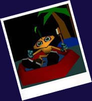

|
| |||||
|
|
Copyright © 1996 Silicon Graphics, Inc. All Rights Reserved.
Trademark Information. Comments: webmaster@vrml.sgi.com or editor@vrml.sgi.com | ||||

Need Help?
Do you have a VRML 2.0 browser plug-in? And which version? Whichever VRML browser you are using, make sure it's the latest version, make sure it supports VRML 2.0 (which is what allows for the cool animation and sound) and also that your Web browser is current. These leading edge technologies are still in the "high maintenance" stage, sorry. (Though if we can help it, that will change ASAP). After you've made sure you have a a current browser and plug-in, reload the page. It seems simple, and it is, and sometimes modern technology just doesn't have answers for why something works one time and not another. If it still doesn't work, and you still get a blank screen when you should be seeing our little Floops, try giving more memory to your Web browser by closing other applications. Also try restarting the browser and emptying the cache. If it still doesn't work, uninstall your VRML browser and install a new version. Of course we know the Cosmo Player browser works with Internet Explorer and Netscape 3.0 (it's what I use everyday), so if you haven't tried Cosmo, it might be worth your time. And if you STILL need help, and you are using Cosmo, try posting to the newsgroup news://cosmo.sgi.com/sgi.comsoplayer . If you are using another 2.0 browser, you will just have to harass the company that made it. Good luck!
You have to Click on Floops to make him start moving and talking. If you click and nothing happens, restart your computer and your browser, and read the instructions above. It could also be that Floops just doesn't like you personally and will never work for you no matter where you are browsing from. Be offended and check back in a week. He's a bit temperamental - especially if you have a coffee stain on your shirt. Ha, made you look.
It could be a number of things. (<--- Typical customer support intro.) The most simple answer is that you didn't wait long enough for the sound file to download. In fact, the sound file is the biggest part of total file size, and it downloads after the image has loaded. So it's a good rule of thumb to wait a couple extra seconds (or maybe even a minute if you have a slow connection) for the entire sound to download before you start clicking on Floops. The more complex answer could have something to do with your sound card, systems configurations, etc. Restarting your computer and allotting more memory, as usual, is always a good thing to try. If you are running an audio program, like a CD player, turn it off and reload the world. More specific questions should go to your computer manufacturer customer service.
Yup, we agree. But that isn't the fault of VRML, its the heavy sound files and animation that goes with it (which will change soon enough). If you have a slower modem or a slower connection, try hitting the site at an off peak time (late night or early morning). Also, if you want to show Floops to other people, download the entire VRML file and save it locally on your machine. That way you can just load a file, even when you are offline, and view Floops whenever you want to.
You could try sending email to editor@vrml.sgi.com, but most likely
I won't know *that* much more than I've already said. (Otherwise it
would be here, right?)
You could also check out other VRML information sources and look for experts.
My first recommendation would be the
VRML repository at the San Diego Supercomputer Center.
|
|
| |||||
|
|
Copyright © 1996 Silicon Graphics, Inc. All Rights Reserved.
Trademark Information. Comments: webmaster@vrml.sgi.com or editor@vrml.sgi.com | ||||